МультиКрит — защита и герметизация бетона мультикрит.рф · портфолио ранних работ 2019–2021
// Портфолио · 2019–2021 · защита и герметизация бетона, восстановление полов
С чего начинался МультиКрит
2019–2021 годы. С этих работ начиналась производственная история МультиКрит. Мы защищали и герметизировали бетонные конструкции и восстанавливали промышленные полы полимеркомпозитными материалами (ПКМ) МультиКрит — грунтами, КомпозитБетоном и защитными покрытиями, в том числе в версиях для влажных поверхностей и для остановки активной течи.
Объекты разные — медеплавильное производство, городской водоканал, склады готовой продукции. На них отрабатывалась и подтверждалась технология, из которой позже выросла линейка материалов и покрытий — вплоть до эластомерной защиты деталей (785/795). Ниже — шесть объектов: по каждому задача, состав решения и результат.
6 объектов2019–2021
3 регионаУрал · Татарстан · Удмуртия
Бетон · полызащита и герметизация
ПКМ МультиКритгрунты · КомпозитБетон · покрытия
// Объект 1 · 05.09.2019
ПАО «СУМЗ» — Среднеуральский медеплавильный завод
г. Ревда · обогатительная фабрика, флотационное отделение · бетонный сгуститель №3
До
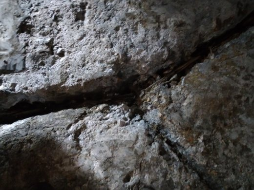
После
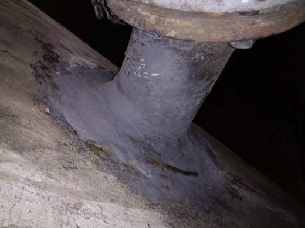
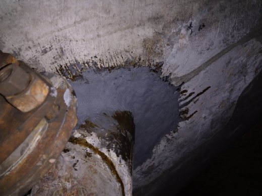
Переходное отверстие после расшивки, герметизации и нанесения защитного покрытия.
// Задача
Обеспечить герметичность ёмкости сгустителя, устранить протечки в переходных отверстиях, загерметизировать выходные патрубки.
// Решение
Зачистка от отслаивающегося бетона, демонтаж гильз патрубков, расшивка и локализация швов и трещин
Обеспыливание и обезжиривание поверхности
Грунт ПКМ МультиКрит 010
Установка выходных патрубков и герметизация КомпозитБетоном МультиКрит 110
Протечки в переходных отверстиях устранены, выходные патрубки установлены и загерметизированы, швы и трещины закрыты защитным покрытием. Полимеризация — 3 суток.
// Объект 2 · 06.08.2020
ПАО «УЗТМ» · ООО «Водоканал 59»
г. Екатеринбург · очистные сооружения ливневых стоков · межсекционная стенка отстойников
До
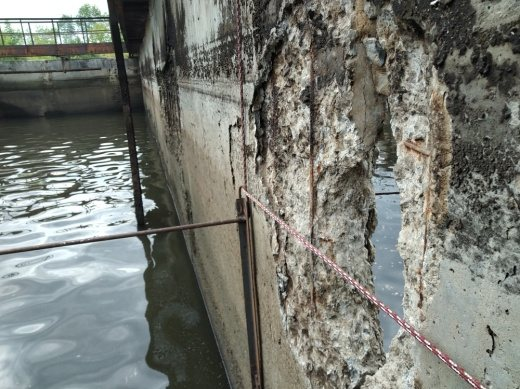
После
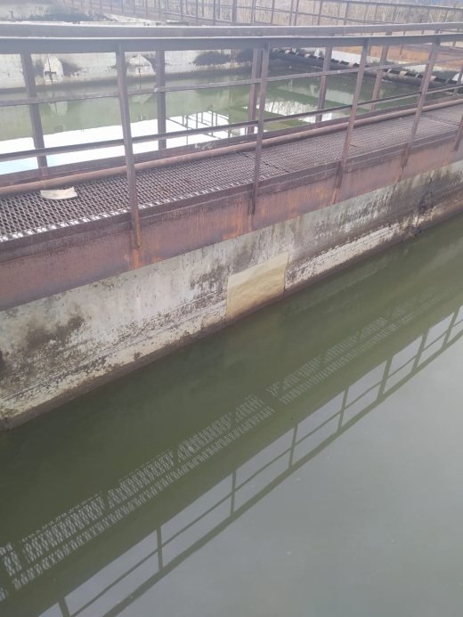
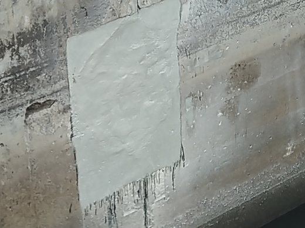
Восстановленный участок стенки после герметизации и защитного покрытия для влажных поверхностей.
// Задача
Обеспечить герметичность межсекционной стенки отстойников, заделать сквозное отверстие на переменной границе вода–воздух.
// Решение
Зачистка от отслаивающегося бетона, обеспыливание
Грунт для влажных поверхностей ПКМ МультиКрит 015
Восстановление стенки и герметизация трещин КомпозитБетоном МультиКрит 115
Защитное покрытие для влажных поверхностей ПКМ МультиКрит 315
// Результат
Стенка восстановлена, сквозное отверстие на границе вода–воздух заделано, поверхность защищена покрытием для влажных условий. Полимеризация на открытом воздухе — 2 суток.
// Объект 3 · 20.07.2021
ПАО «УЗТМ» · ООО «Водоканал 59»
г. Екатеринбург · здание заводской фильтровальной станции · вводные трубы железобетонных ёмкостей
До
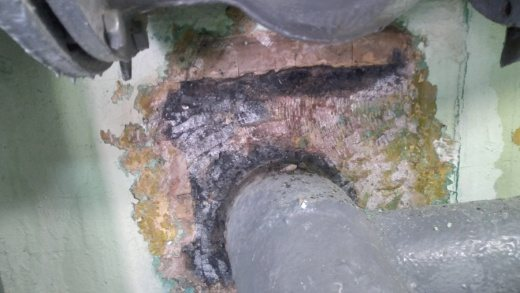
После
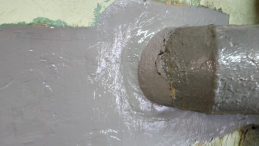
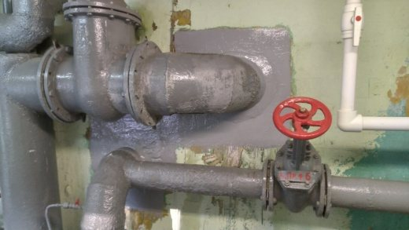
Трубопровод в сборе после устранения течи, выравнивания и нанесения защитного покрытия.
// Задача
Устранить течь воды через вводные трубы железобетонных ёмкостей и обеспечить герметичность при эксплуатации.
// Решение
Зачистка труб, гильз и бетона от наслоений и грязи
Обеспыливание, обезжиривание, грунт для влажных поверхностей ПКМ МультиКрит 015
Выравнивание и герметизация КомпозитБетоном 115, защитное покрытие ПКМ МультиКрит 315
// Результат
Течь через вводные трубы устранена, поверхность выровнена и загерметизирована, нанесено защитное покрытие для влажных поверхностей. Полимеризация — 2 суток.
// Объект 4 · 10.12.2020
ПАО «УЗТМ» · ООО «Водоканал 59»
г. Екатеринбург · насосная станция №2 · гильзы ввода труб
До
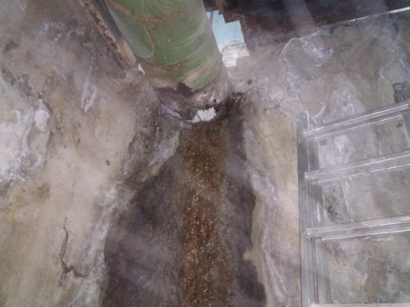
После
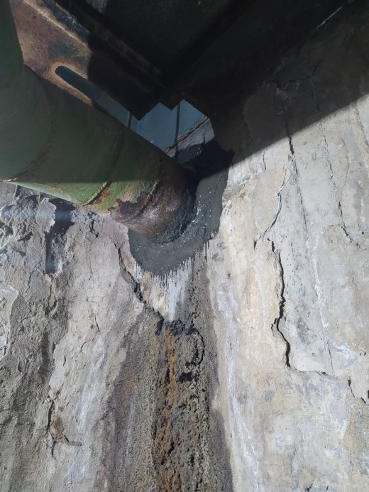
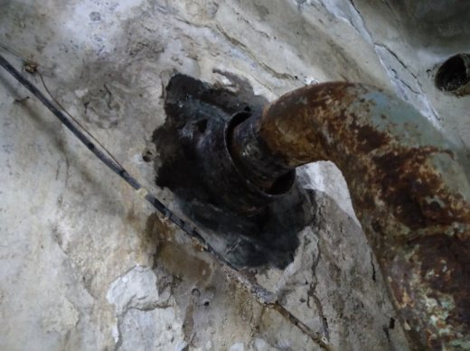
Гильза ввода после устранения течи, выравнивания и герметизации.
// Задача
Устранить течь грунтовых вод через гильзы ввода труб и обеспечить герметичность при эксплуатации.
// Решение
Зачистка труб, гильз и бетона от наслоений и грязи
Обеспыливание, грунт для влажных поверхностей ПКМ МультиКрит 015
Выравнивание и герметизация КомпозитБетоном 115, защитное покрытие ПКМ МультиКрит 315
// Результат
Течь грунтовых вод через гильзы ввода устранена, вводы выровнены и загерметизированы, нанесено защитное покрытие. Полимеризация на открытом воздухе — 2 суток.
// Объект 5 · 14.07.2021
ICL Техно
с. Усады, Лаишевский район, Республика Татарстан · склад готовой продукции · полимерный и топпинговый пол
До
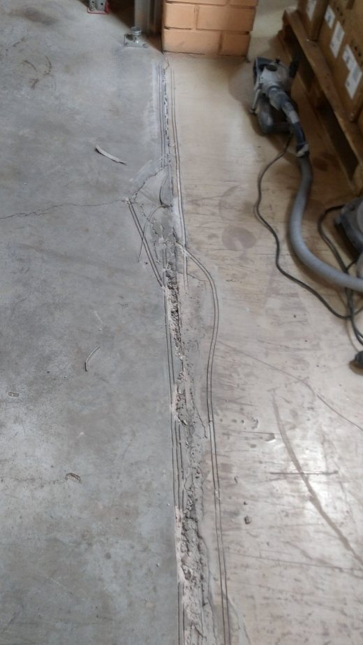
После
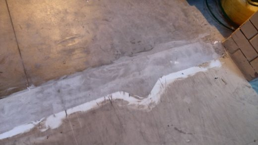
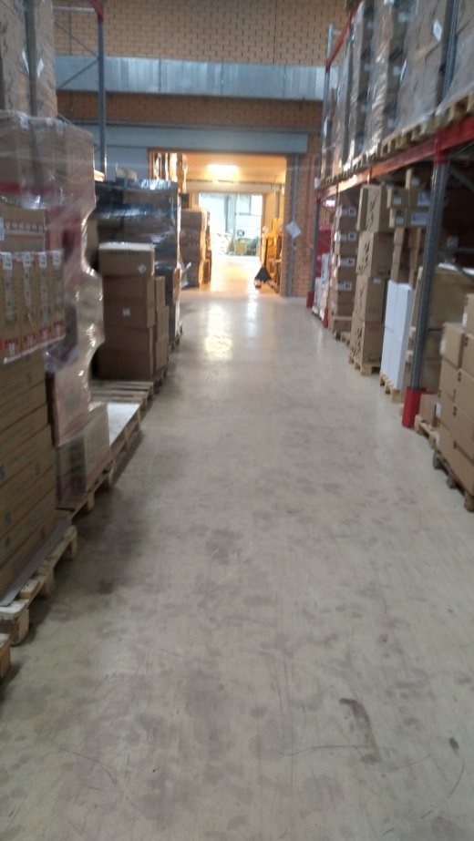
Восстановленный пол склада — ровная поверхность под движение погрузочной техники.
// Задача
Восстановить разрушенные участки полимерного и топпингового пола в местах деформационных швов, выбоин и трещин; обеспечить ровность под погрузочную технику.
// Решение
Расшивка деформационных швов и трещин на глубину не менее 30 мм и ширину не менее 100 мм
Обеспыливание поверхности
Грунт ПКМ МультиКрит 010 со специальным отвердителем для быстрой полимеризации
Выравнивание и герметизация КомпозитБетоном МультиКрит 115, шлифовка участков
// Результат
Разрушенные участки пола восстановлены, швы и трещины загерметизированы. Быстрый отвердитель дал полимеризацию за 3 часа — участок введён в эксплуатацию в тот же день; выполнена шлифовка для плавного перехода уровней.
// Объект 6 · 28.03.2021
ОАО «КОМОС» · ОАО «МИЛКОМ», ПП «Сарапул-молоко»
г. Сарапул · склад готовой продукции · полимерный пол, деформационные швы
До
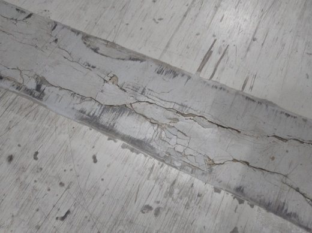
После
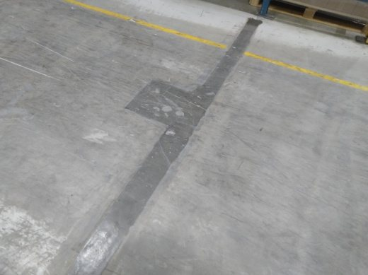
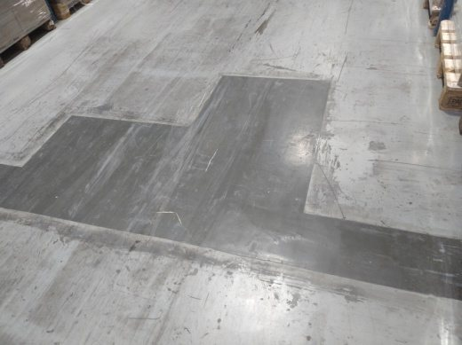
Восстановленные участки пола — ровная поверхность под погрузочную технику.
// Задача
Восстановить разрушенные участки полимерного пола в местах деформационных швов; обеспечить ровность под погрузочную технику.
// Решение
Расшивка деформационных швов и трещин на глубину не менее 30 мм и ширину не менее 100 мм
Обеспыливание поверхности
Грунт ПКМ МультиКрит 010
Выравнивание и герметизация КомпозитБетоном МультиКрит 110, шлифовка участков
// Результат
Разрушенные участки пола в местах деформационных швов восстановлены, ровность под погрузочную технику обеспечена. Полимеризация — 48 часов, затем ввод в эксплуатацию и шлифовка.
// Что из этого выросло
Применимо там, где нужно вернуть герметичность бетонным ёмкостям, стенам и приямкам или восстановить промышленный пол под нагрузкой: гидроизоляция по влажному основанию, остановка активной течи, заделка деформационных швов и трещин, защитные покрытия. С этих задач начиналась технология МультиКрит — те же материалы и подход развились в линейку покрытий для промышленного оборудования, включая эластомерную защиту деталей от абразивного износа.
Портфолио подготовлено ООО «МультиКрит»™. Защита и герметизация бетона, восстановление промышленных полов — мультикрит.рф